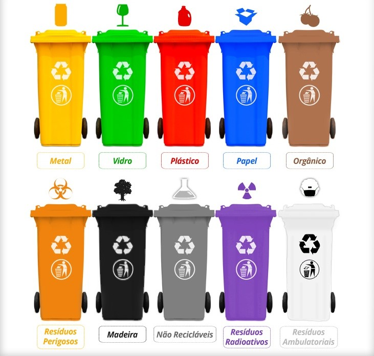

Lixo Orgânico
Restos de comida
Restos de comida, cascas de frutas e verduras devem ser colocados na composteira ou no lixo orgânico.

Aprenda a separar corretamente cada tipo de resíduo e contribuir para um planeta mais limpo!
Restos de comida, cascas de frutas e verduras devem ser colocados na composteira ou no lixo orgânico.
Latas, utensílios metálicos e pequenos objetos de metal devem ser reciclados separadamente.

Garrafas, potes e frascos de vidro devem ser lavados e colocados para reciclagem.
Garrafas PET, sacolas plásticas e embalagens devem ser separadas para reciclagem.

Jornais, revistas, caixas e papelão limpos devem ser separados para reciclagem.

Materiais perigosos como pilhas, baterias e eletrônicos devem ser entregues em pontos de coleta especiais.
Resíduos de madeira devem ser reutilizados ou encaminhados para pontos de coleta adequados.
Itens que não podem ser reciclados devem ser descartados no lixo comum, evitando misturar com recicláveis.

Resíduos radioativos devem ser manuseados apenas por empresas especializadas e nunca jogados no lixo comum.
Agulhas, seringas e outros resíduos de saúde devem ser descartados em pontos de coleta hospitalar apropriados.